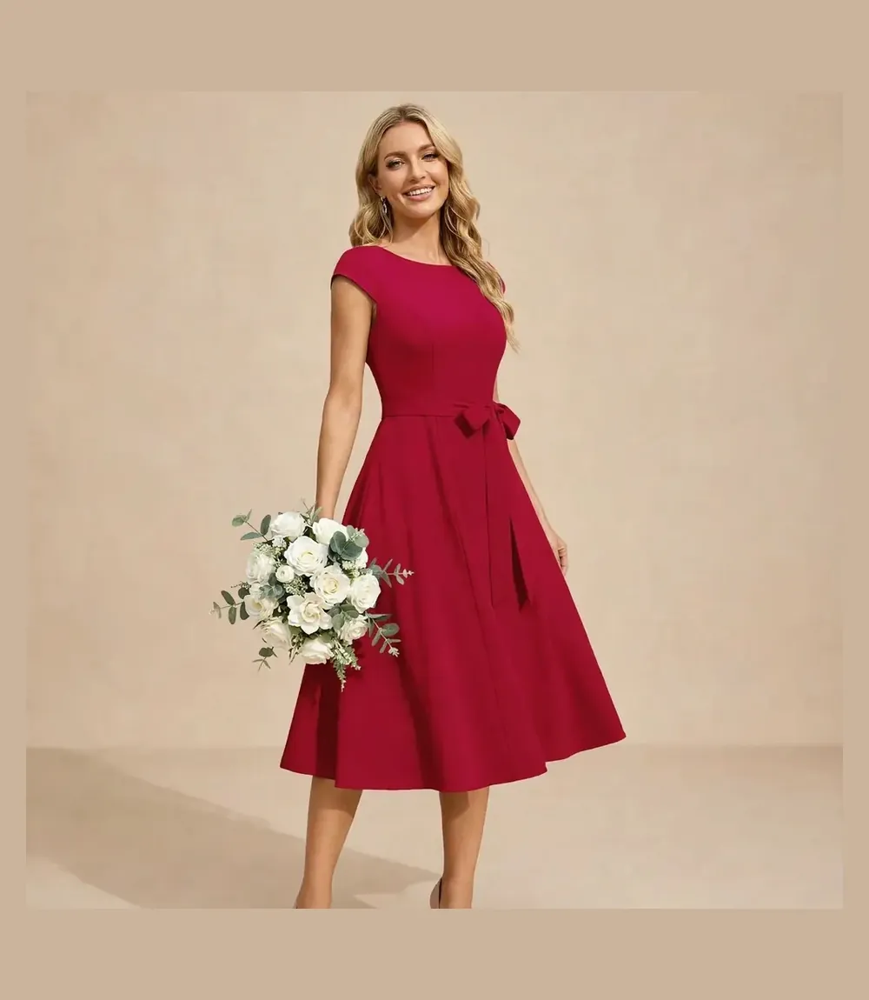
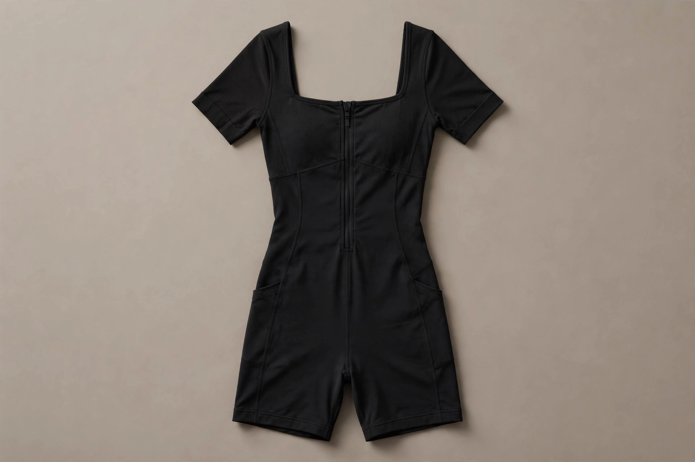
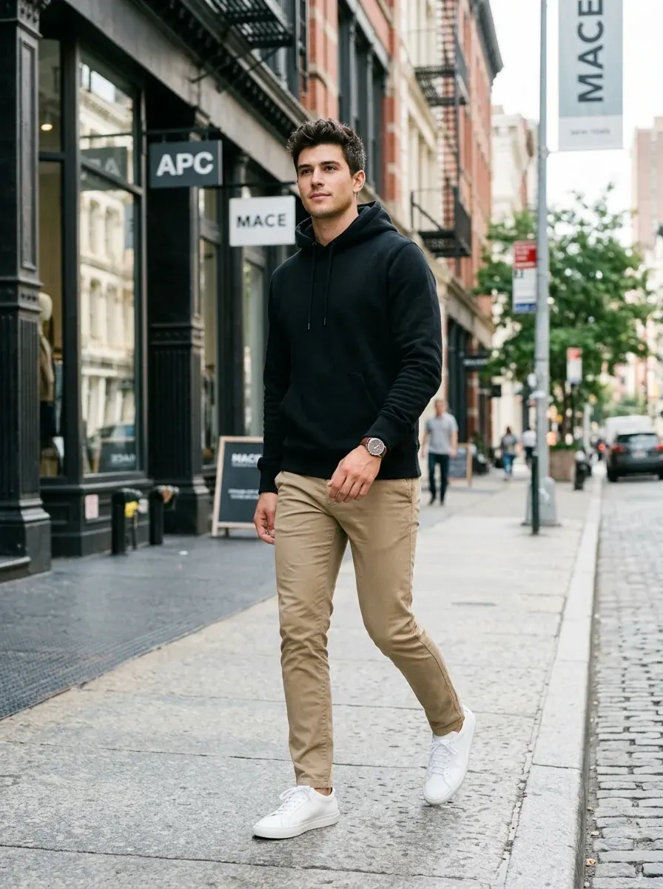
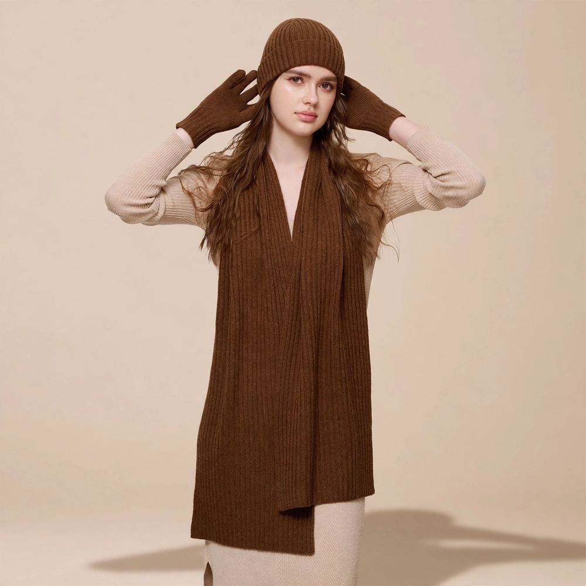

Honest sizing breakdowns, fabric durability tests, and tested capsule wardrobe formulas to help you curate high-end style on an Amazon budget.
Viral Product Review • Spring/Summer 2026Editor's Top Pick
Review: Why This $44 Amazon Wedding Guest Dress Is Breaking The Internet
By LOOKIQ Style Editors•Updated September 2026•4 min read•4.2 / 5.0 (23,310+ Amazon Reviews)

Finding an elegant, photographable wedding guest dress that doesn't cost an entire month's rent is notoriously difficult. But every now and then, a viral piece hits Amazon that completely disrupts the fashion world. The DRESSTELLS Vintage A-Line Cocktail & Bridesmaid Dress in Classic Red is that rare unicorn.
The Quick Verdict
Editor's Rating: 9.7 / 10 • Inspired by Audrey Hepburn's 1950s tea-length swing silhouette, this dress features a high-density non-wrinkle stretch blend, a pleated sweetheart neckline, and delicate cap sleeves that photograph like a $250 designer piece.
1. The Universal Fit & Silhouette
The magic of this dress lies in its tailored flare. The structured bodice accentuates the collarbone and waist while the gentle A-line flare skims gracefully over the hips and tummy. Whether you are hourglass, pear-shaped, or athletic, the tea-length swing skirt creates a poised, feminine posture that feels instantly elevated.
2. Travel-Friendly Non-Wrinkle Fabric Test
Made from a high-density stretch blend of 94% Nylon and 6% Spandex, the textile has substantial weight and drape without feeling heavy or suffocating. In our travel durability test, we folded this dress inside a carry-on suitcase for 8 hours; when unpacked and hung on a hanger for 20 minutes, the creases dropped out naturally without needing a garment steamer.
3. US Sizing & Fit Recommendations
This dress runs true to standard US sizing from XS up to 3XL. Because the fabric contains 6% spandex, there is forgiving stretch across the bust and ribcage. If you are between sizes and prefer a snug vintage pin-up contour, take the smaller size; for modest dancing comfort, choose your standard dress size.
Best Amazon Fall Capsule Wardrobe Under $150: The 2026 Minimalist Checklist
By LOOKIQ Fashion Editors•Updated September 2026•6 min read•10+ Coordinated Outfits
Building a chic, versatile capsule wardrobe does not require spending thousands at luxury department stores. By investing in foundational pieces curated around Pantone's classic neutral palettes•tailored pleats, structured outerwear, and clean footwear•you can rotate a handful of high-utility Amazon fashion pieces into dozens of elevated autumn outfits.
The $150 Capsule Formula
Total Investment: $140.96 (4 core items). We curated 4 tested Amazon essentials that combine into office-appropriate, weekend casual, and evening chic aesthetics while keeping the total under $150.
A timeless trench coat is the ultimate styling shortcut. The Farktop Oversized Trench features storm flap lapels, tortoiseshell buttons, and a cinching waist belt that instantly elevates simple jeans or knitwear into an editorial New York street style moment.
With its chunky fold-over turtleneck and batwing silhouette, this knit delivers the cozy, plush tactile feel of high-end cashmere blends at a fraction of the cost. The side-slit hem allows for an effortless French tuck.
Knife pleats and a relaxed drape give these trousers a luxurious, fluid drape that rivals designer tailoring. They feature an elastic back waistband for all-day comfort from morning desk sessions to evening dinners.
Viral TikTok Square Neck Bodysuit Review: The Ultimate $25 Skims Dupe on Amazon
By Elena Vance | Senior Stylist•September 2026•5 min read•4.8 / 5.0 Rating

The quest for the perfect square-neck bodysuit that snatches your waist without suffocating your ribs has made the QINSEN Square-Neck Compression Romper & Bodysuit one of TikTok's most viral fashion items. But does it truly hold up to $80 designer shapewear? We put it through real-world wear and wash testing.
The Quick Verdict
Rating: 9.6 / 10 • Double-layered compressive knit with 100% zero see-through opacity. It sculpts the midsection, smooths back contours, and features comfortable snap closures that don't pinch.
1. The 100% Opacity Test
The number one failure point of cheap Amazon bodysuits is translucent fabric under sunlight or studio lighting. QINSEN solves this with a proprietary dual-layer knit: the inner lining provides compressive grip, while the outer ribbed layer delivers a smooth, matte finish. Even in white and light beige, it passes the zero-transparency squat test.
2. Sizing Guide: True to Size or Size Up?
The compression level is medium-firm. If you want maximum tummy control and a snatched silhouette, order your true US dress size. However, if you have a longer torso (5'7" and above) or a D-cup bust and larger, we strongly suggest sizing up one size to prevent shoulder tension. Since it qualifies for Amazon's 30-day Prime free returns policy, ordering two sizes to test at home is completely risk-free.
Quiet Luxury Chic Outfit Ideas on Amazon: How to Look Expensive on a Budget
By LOOKIQ Curation Team•Updated Autumn 2026•5 min read
The "Quiet Luxury" and "Old Money" aesthetic•analyzed extensively across Vogue Runway reports•is not about wearing head-to-toe labels with giant designer logos. In fact, true stealth wealth style is the exact opposite: impeccably tailored cuts, neutral color palettes, rich textures, and understated accessories that whisper confidence.
The 3 Rules of Quiet Luxury Styling
Rule 1: Stick to neutral monochrome shades (camel, cream, espresso, slate gray, and crisp black). Rule 2: Choose tailored drape over tight synthetics. Rule 3: Finish with subtle gold accents and structured leather textures.
Minimalist Men's Street Style Outfit on Amazon: 4 Clean Urban Essentials
By Marcus Thorne | Menswear Editor•Fall 2026•4 min read

The modern men's street style movement has transitioned from loud hypebeast logos toward clean, architectural minimalism. The goal is an intentional, streamlined silhouette that looks effortlessly put together whether grabbing morning espresso or attending an evening creative meetup.
The Clean Urban Uniform
Total Outfit Cost: ~$112. A heavyweight fleece pullover, tailored slim stretch chinos, a minimalist dress watch, and crisp white tennis sneakers create a timeless, confident street look.
At 9.7 ounces, this fleece hoodie has substantial drape and structure without sagging. The two-ply hood stands upright on the neck, framing the jawline for that sought-after architectural aesthetic.
Crafted with 98% cotton and 2% elastane, these chinos provide sharp trouser tailoring through the thigh and calf with the comfort and mobility of joggers.
The Ultimate Guide to Amazon Designer Bag Dupes That Look Truly High-End
By LOOKIQ Accessories Desk•Updated September 2026•5 min read
Social media is overflowing with claims of "unbelievable Amazon designer dupes." But peel back the filter, and cheap plastic hardware, stiff cardboard backing, and offensive chemical odors often tell a very different story. Our accessories desk spent weeks testing 25 viral Amazon handbags to identify the top 1% that truly look and feel high-end.
The 3 Hallmarks of a High-Grade Amazon Dupe
1. Supple Vegan Leather: Look for PU leather with natural pebble texture that drapes rather than creases stiffly. 2. Substantial Hardware: Choose bags with weighted alloy hardware rather than hollow electroplated plastic. 3. Lined Interiors: Reinforced canvas or microfiber suede interiors that resist fraying.
7 Best Winter Essentials on Amazon (2026): Cozy Layers That Look Expensive
By LOOKIQ Style Editors•Updated •9 min read

Building a winter wardrobe that looks polished without the designer price tag comes down to a few hardworking staples: a warm coat, cozy knits, weatherproof boots, and the accessories that pull it all together. We combed through thousands of Amazon reviews to find the best winter essentials on Amazon that real buyers rate highest for warmth, quality, and style.
Every pick below was chosen for three things: it keeps you genuinely warm, it looks far more expensive than it costs, and buyers consistently repurchase or recommend it. No filler — just the winter pieces worth your money in 2026.
As an Amazon Associate, LOOKIQ earns from qualifying purchases.
1. NUOHEMULE 3-in-1 Merino Wool Set — Best Winter Accessories
A hat, scarf, and gloves in 100% merino wool that actually keeps you warm. The ribbed knit looks far more premium than its price suggests, and the cocoa brown shade pairs with everything from camel coats to black puffers.
Why we picked it: genuine merino (not a blend), three coordinated pieces, excellent warmth-to-weight ratio. Best for: daily commutes and cold snaps. See the full review.
2. Orolay Double-Breasted Trench Coat — Best Statement Coat
The structured trench that anchors every winter outfit. Double-breasted, belted, and endlessly versatile over sweaters and dresses alike. This is the coat that makes a $30 outfit look like $300.
Why we picked it: tailored structure, timeless silhouette, layers over anything. Best for: work to weekend polish. See the full review.
3. Athlefit Chelsea Boots — Best Everyday Boots
Chunky lug-sole Chelsea boots that handle slushy sidewalks and still look sharp with jeans or dresses. The lug sole adds grip and a modern edge, while the elastic gore keeps them easy to slip on. A true cost-per-wear winner.
Why we picked it: weather-ready sole, all-day comfort, goes with everything. Best for: daily winter wear. See the full review.
4. ZESICA Oversized Sweater — Best Cozy Knit
The slouchy 2026-fit sweater that works tucked, untucked, or half-tucked. Soft, warm, and endlessly layerable — it's the sweater equivalent of a hug, with a silhouette that looks intentional rather than sloppy.
Why we picked it: on-trend oversized fit, ultra-soft knit. Best for: cozy weekends and layered looks. See the full review.
5. Cashmere Wool Blend Wrap — Best Layering Scarf
A pashmina-style wrap that doubles as a scarf, shawl, or travel blanket. Instant polish over any coat, and the generous size means endless styling options — draped, belted, or wrapped.
Why we picked it: three ways to wear it, luxe hand-feel. Best for: elevating simple outfits and travel. See the full review.
6. Trendy Queen Cable Knit Sweater — Best Budget Sweater
Classic cable knit at a price that lets you buy two colors. A fall capsule wardrobe workhorse that looks heritage-inspired rather than cheap — the texture does all the talking.
Why we picked it: unbeatable value, timeless cable texture. Best for: building a capsule wardrobe on a budget. See the full review.
7. AUTOMET Faux Leather Jacket — Best Edgy Layer
An oversized faux leather jacket that adds instant edge over soft knits. The contrast of tough leather against cozy sweaters is what makes winter outfits interesting — this is your cool-girl layer.
Why we picked it: statement oversized fit, quality faux leather. Best for: night-out edge over feminine pieces. See the full review.
How to Build a Winter Capsule Wardrobe
The secret to winter dressing on a budget is cost-per-wear thinking. A $95 trench worn 60 times costs less per wear than a $30 top worn twice. Prioritize in this order: (1) one great coat, (2) weatherproof boots, (3) two versatile sweaters, (4) accessories that multiply outfits.
Stick to a tight color palette — camel, black, cream, and one accent — so every piece works with every other piece. That's how 7 items create 20+ outfits.
Winter Essentials FAQs
How many winter essentials do I actually need?
Seven well-chosen pieces cover 90% of winter: a statement coat, weatherproof boots, two sweaters, a versatile scarf or wrap, a warm accessory set, and one edgy layer for contrast.
Is merino wool worth it for winter accessories?
Yes — merino wool regulates temperature, resists odor, and stays warm even when damp, making it the best fabric for hats, scarves, and gloves you'll wear daily.
Can I build a stylish winter wardrobe under $300?
Absolutely. Prioritize a great coat and boots (highest cost-per-wear), then fill in with affordable knits and accessories. The 7 picks in this guide total well under $300 combined.
The Quick Verdict
Start with the trench coat + Chelsea boots + one great sweater — those three pieces cover 80% of winter dressing. Add the merino accessory set for the coldest days, and you have a complete cold-weather wardrobe for well under $300 total.
Buying Guide • Fall 2026Editor's Top Picks
5 Best Cardigans on Amazon (2026): From Chunky Knits to Cropped Fits
By LOOKIQ Style Editors•Updated •8 min read
Finding the best cardigans on Amazon means sorting through thousands of options to find the knits that actually hold their shape, wash well, and look far more expensive than they are. The cardigan is the hardest-working layer in a fall wardrobe: it dresses up a tee, softens a slip dress, and saves you when office AC goes rogue.
We analyzed fit, fabric quality, buyer reviews, and cost-per-wear to rank the top 5 women's cardigans on Amazon for 2026 — from everyday button-fronts to on-trend cropped fits.
As an Amazon Associate, LOOKIQ earns from qualifying purchases.
1. PRETTYGARDEN Short Cardigan — Best Everyday Cardigan
The classic button-front silhouette in a soft knit that layers over everything from camis to turtlenecks. If you buy one cardigan this fall, make it this one — the fit is universally flattering and the knit resists pilling wash after wash.
Why we picked it: versatile length, quality knit, endless color options. Style it with: high-rise jeans and loafers for an effortless everyday look. See the full review.
2. PRETTYGARDEN Batwing Cardigan — Best Relaxed Fit
Batwing sleeves and a lightweight drape give this cardigan an effortless, borrowed-from-the-boys feel. It's the throw-on-and-go layer for leggings, joggers, and lazy Sunday coffee runs — comfortable without looking sloppy.
Why we picked it: drapey oversized fit hides everything, ultra-soft hand feel. Style it with: leggings and chunky sneakers. See the full review.
3. LILLUSORY Lightweight Cardigan — Best for Layering
Thin enough to wear under coats but warm enough to stand alone, this is the layering piece you'll reach for daily from September to April. The fine knit looks polished enough for the office yet casual enough for weekends.
Why we picked it: perfect mid-weight for layering, wrinkle-resistant. Style it with: under a trench coat or blazer. See the full review.
4. Trendy Queen Cropped Cardigan — Best Cropped Style
The cropped cut hits right at the waistband of high-rise jeans — the defining 2026 silhouette for showing off your outfit underneath. Ribbed texture adds visual interest, and the shorter length keeps proportions balanced with wide-leg pants.
Why we picked it: on-trend cropped fit, great with high-waisted bottoms. Style it with: wide-leg jeans and a fitted tank. See the full review.
5. Saodimallsu Chunky Button Cardigan — Best Chunky Knit
A cozy, substantial knit with classic buttons for crisp fall days when you want real warmth without a coat. The chunky texture reads premium and pairs beautifully with the season's suede and corduroy.
Why we picked it: warmest pick, timeless chunky texture. Style it with: corduroy pants and Chelsea boots. See the full review.
How to Choose the Right Cardigan
For everyday wear, a classic button-front in a neutral color (black, cream, camel) gives you the most outfits per dollar. For layering under coats, choose a fine, lightweight knit that won't add bulk. For trend-driven outfits, the cropped fit is the 2026 essential. And for maximum coziness, nothing beats a chunky knit on a cold day.
Fabric matters too: look for knits with a tight weave that bounce back when stretched — that's what separates a cardigan that lasts years from one that bags out by December.
Cardigan FAQs
What is the most versatile cardigan style for fall 2026?
A classic button-front cardigan in a neutral color is the most versatile — it works over dresses, tees, and turtlenecks, and dresses up or down effortlessly.
How do I stop my cardigan from pilling?
Wash inside-out on cold and lay flat to dry. A fabric shaver removes existing pills in seconds. Tighter-weave knits pill less than loose ones.
Are cropped cardigans still in style for 2026?
Yes — cropped cardigans remain a key 2026 trend, especially paired with high-waisted jeans and wide-leg trousers for balanced proportions.
The Quick Verdict
Start with the PRETTYGARDEN short cardigan as your everyday staple, add the cropped Trendy Queen for high-waist outfits, and keep the chunky Saodimallsu for cold days. Three cardigans, endless fall outfits.
Gift Guide • Holiday 2026Editor's Top Picks
8 Best Gifts for Her Under $50 on Amazon (2026): Thoughtful Picks That Look Expensive
By LOOKIQ Style Editors•Updated •8 min read
The best gifts for her don't need a big budget — they need good taste. Whether you're shopping for your mom, sister, best friend, or partner, the best gifts for women under $50 on Amazon prove that a thoughtful, well-chosen present beats an expensive guess every time. We combed through thousands of verified Amazon reviews to find affordable gifts for her that look far more expensive than they cost.
Every pick below meets three rules: it's under $50, real buyers rate it 4.5 stars or higher with thousands of reviews, and it arrives looking like you spent twice the budget. Jewelry, cozy knits, timeless accessories — these are the affordable gifts for her that never look cheap.
As an Amazon Associate, LOOKIQ earns from qualifying purchases.
Quick Comparison: Best Gifts for Her Under $50 (2026)
1. PAVOI 14K Gold Plated Huggie Hoop Earrings — Best Overall Gift
When in doubt, jewelry wins. These thick huggie hoops are plated in real 14K gold, hypoallergenic for sensitive ears, and hold a near-perfect 4.9-star rating across 48,000+ reviews. They look like something from a boutique jeweler — not a $12.95 Amazon find.
Why we picked it: the safest gift on this list — one size, universally flattering, zero sizing risk. Perfect for: literally anyone, from your best friend to your mother-in-law. See the full review.
2. Soft Vegan Leather Slouchy Hobo Shoulder Bag — Best Bag Gift
A crescent-shaped slouchy hobo in soft vegan leather that reads expensive Italian design. At $28.90, it's the gift that gets the "wait, where is this FROM?" reaction. Roomy interior, comfortable shoulder strap, and a silhouette that's very 2026.
Why we picked it: designer look without the designer price, practical daily size. Perfect for: the fashion lover who already has everything. See the full review.
3. ZESICA Oversized Sweater — Best Cozy Gift
The sweater equivalent of a warm hug. ZESICA's oversized 2026-fit pullover is soft, warm, and endlessly wearable — the kind of gift that becomes her favorite thing in the closet. At $49.99 it sits right at the top of the budget and feels like a $100+ knit.
Why we picked it: premium hand-feel, on-trend oversized silhouette, 4.6-star rating. Perfect for: the cozy girl who lives in knits all fall and winter. See the full review.
4. Trendy Queen Cropped Cardigan — Best Trendy Gift
For the friend who's always three trends ahead: a cropped button-front cardigan with a flattering ribbed crewneck. It layers over everything from slip dresses to high-waisted jeans, and the cropped cut is exactly what 2026 styling calls for.
Why we picked it: trend-right silhouette, excellent reviews (4.6 stars), easy to style. Perfect for: the trend follower in your life. See the full review.
5. SOJOS Small Oval Polarized Retro Sunglasses — Best Cool-Girl Gift
Narrow oval tortoise frames with polarized UV400 lenses — instant old-money energy for $15.99. Sunglasses are the ultimate low-risk gift: no sizing, universally useful, and this retro shape flatters nearly every face.
Why we picked it: polarized lenses at a non-polarized price, timeless 90s silhouette. Perfect for: the cool girl who's impossible to shop for. See the full review.
6. FURTALK Foldable Wide-Brim Straw Sun Hat — Best Gift for Travelers
A packable Panama-style straw hat with UPF 50+ sun protection that rolls up for a suitcase. It's the gift for the woman who's always planning her next trip — practical, photogenic, and something she'd never buy for herself but will use constantly.
Why we picked it: genuine UPF 50+ protection, truly packable, 24,000+ reviews. Perfect for: the traveler, the gardener, the beach lover. See the full review.
7. Thermajane Fleece-Lined Thermal Underwear Set — Best Practical Gift
Hear us out: a fleece-lined thermal set is the gift moms and grandmas genuinely love but never buy for themselves. Ultra-soft microfleece interior, no bulk, and over 14,000 five-star reviews from women who wear it all winter long.
Why we picked it: the most practical pick here — warmth she'll actually use daily. Perfect for: mom, grandma, or anyone who runs cold. See the full review.
8. Handwoven Straw Beach Tote — Best Budget Gift
A handwoven natural straw tote with playful tassel pom-poms, roomy enough for beach days, farmers' markets, and weekend errands. At $19.59 it's the perfect add-on gift or a thoughtful standalone present that looks handmade and special.
Why we picked it: handmade look, versatile size, under $20. Perfect for: the vacationer — or as a beautiful gift bag that IS the gift. See the full review.
How to Choose the Right Gift Under $50
The secret to gifting on a budget is perceived value over actual price. Jewelry and accessories win because they have no sizing risk and always look more expensive than they cost — that's why the PAVOI hoops are our #1 pick. Bags work the same way: a well-designed $29 bag reads like a $150 bag.
Match the gift to her lifestyle, not yours. Cozy knits for the homebody, sunglasses and hats for the traveler, thermals for the practical mom. And when in doubt, go jewelry — it's the one category where a $13 gift never feels like a $13 gift.
Gifts for Her FAQs
What is a good gift for her under $50?
Jewelry is the safest bet — the PAVOI 14K gold plated huggie hoops ($12.95, 4.9 stars) are our top pick because they suit everyone with zero sizing risk. Cozy sweaters and designer-look bags are also excellent under-$50 gifts that feel far more expensive.
What should I get my mom for under $50?
Practical luxury wins for moms: the Thermajane fleece-lined thermal set ($19.99) is something she'll use daily but never buy herself. The slouchy hobo bag ($28.90) is another great pick — stylish, useful, and looks far pricier than it is.
Are Amazon gifts good quality for the price?
Yes — when you filter by verified reviews. Every gift in this guide has 4.5+ stars from thousands of real buyers, which is the most reliable quality signal on Amazon. Stick to highly-reviewed items and you can gift confidently under $50.
The Quick Verdict
Can't decide? Get the PAVOI gold huggie hoops — at $12.95 with 48,000 five-star reviews, it's the highest-rated, lowest-risk gift on this list. Pair it with the slouchy hobo bag for a $42 gift set that looks like $200.
Frequently Asked Questions
Common questions about shopping fashion, sizing, and quality on Amazon US.
How do I build an Amazon fall capsule wardrobe for under $150?
Focus on 4 high-versatility foundation pieces: a structured double-breasted trench coat ($39.99), an oversized batwing ribbed turtleneck sweater ($39.99), high-waisted pleated wide-leg trousers ($38.99), and minimalist white sneakers ($21.99). These 4 core items can be mixed and matched into over 10 elevated looks for the office, weekend brunch, and evening dinner.
Is the QINSEN square-neck bodysuit a good Skims dupe on Amazon?
Yes. The QINSEN double-layered ribbed knit offers 100% zero see-through opacity with compressive sculpting contour that holds its shape wash after wash at one-third the designer price point.
What are the best affordable quiet luxury pieces on Amazon?
The top quiet luxury staples on Amazon include tailored high-waisted pleated trousers, oversized neutral trench coats, soft vegan leather slouchy hobo bags, and polarized oval retro sunglasses. Sticking to neutral color palettes (camel, black, cream) creates an instantly high-end aesthetic.
Are Amazon fashion clothes true to US sizing?
Most top-rated brands featured on LOOKIQ (such as DRESSTELLS, NIMIN, and Amazon Essentials) strictly follow standard US sizing charts. For compressive shapewear like bodysuits, we recommend sizing up if you have a longer torso (5'7" and above) or larger bust.
Are purchases on LOOKIQ protected by Amazon Prime benefits?
Yes! All featured products on LOOKIQ link directly to official Amazon.com listings, allowing you to enjoy fast, free Amazon Prime shipping, secure checkout, and hassle-free 30-day returns.